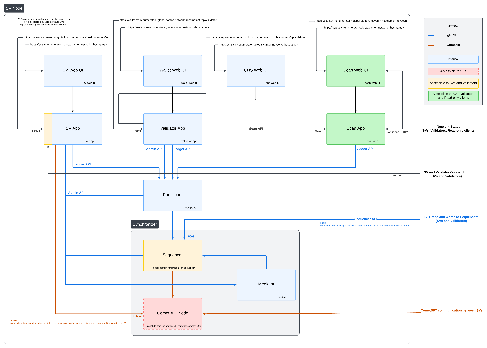

Kubernetes-Based Deployment of a Super Validator node
This section describes deploying a Super Validator (SV) node in kubernetes using Helm charts. The Helm charts deploy a complete node and connect it to a target cluster.
Requirements
A running Kubernetes cluster in which you have administrator access to create and manage namespaces.
A development workstation with the following:
kubectl- At least v1.26.1helm- At least v3.11.1
Your cluster needs a static egress IP. After acquiring that, propose to the other SVs to add it to the IP allowlist.
Please download the release artifacts containing the sample Helm value files, from here: Download Bundle, and extract the bundle:
tar xzvf 0.3.11-ci-snapshot.20250213.1.0.vd1e7d5e4_splice-node.tar.gz
Please inquire if the global synchronizer (domain) on your target network has previously undergone a synchronizer migration. If it has, please record the current migration ID of the synchronizer. The migration ID is 0 for the initial synchronizer deployment and is incremented by 1 for each subsequent migration.
export MIGRATION_ID=0
Generating an SV identity
SV operators are identified by a human-readable name and an EC public key. This identification is stable across deployments of the Global Synchronizer. You are, for example, expected to reuse your SV name and public key between (test-)network resets.
Use the following shell commands to generate a keypair in the format expected by the SV node software:
# Generate the keypair
openssl ecparam -name prime256v1 -genkey -noout -out sv-keys.pem
# Encode the keys
public_key_base64=$(openssl ec -in sv-keys.pem -pubout -outform DER 2>/dev/null | base64 | tr -d "\n")
private_key_base64=$(openssl pkcs8 -topk8 -nocrypt -in sv-keys.pem -outform DER 2>/dev/null | base64 | tr -d "\n")
# Output the keys
echo "public-key = \"$public_key_base64\""
echo "private-key = \"$private_key_base64\""
# Clean up
rm sv-keys.pem
These commands should result in an output similar to
public-key = "MFkwEwYHKoZIzj0CAQYIKoZIzj0DAQcDQgAE1eb+JkH2QFRCZedO/P5cq5d2+yfdwP+jE+9w3cT6BqfHxCd/PyA0mmWMePovShmf97HlUajFuN05kZgxvjcPQw=="
private-key = "MEECAQAwEwYHKoZIzj0CAQYIKoZIzj0DAQcEJzAlAgEBBCBsFuFa7Eumkdg4dcf/vxIXgAje2ULVz+qTKP3s/tHqKw=="
Store both keys in a safe location. You will be using them every time you want to deploy a new SV node, i.e., also when deploying an SV node to a different deployment of the Global Synchronizer and for redeploying an SV node after a (test-)network reset.
The public-key and your desired SV name need to be approved by a threshold of currently active SVs in order for you to be able to join the network as an SV. For DevNet and the current early version of TestNet, send the public-key and your desired SV name to your point of contact at Digital Asset (DA) and wait for confirmation that your SV identity has been approved and configured at existing SV nodes.
Preparing a Cluster for Installation
Create the application namespace within Kubernetes.
kubectl create ns sv
Configuring Authentication
For security, the various components that comprise your SV node need to be able to authenticate themselves to each other, as well as be able to authenticate external UI and API users. We use JWT access tokens for authentication and expect these tokens to be issued by an (external) OpenID Connect (OIDC) provider. You must:
Set up an OIDC provider in such a way that both backends and web UI users are able to obtain JWTs in a supported form.
Configure your backends to use that OIDC provider.
OIDC Provider Requirements
This section provides pointers for setting up an OIDC provider for use with your SV node. Feel free to skip directly to Configuring an Auth0 Tenant if you plan to use Auth0 for your SV nodes authentication needs. That said, we encourage you to move to an OIDC provider different from Auth0 for the long-term production deployment of your SV, to avoid security risks resulting from a majority of SVs depending on the same authentication provider (which could expose the whole network to potential security problems at this provider).
Your OIDC provider must be reachable [1] at a well known (HTTPS) URL.
In the following, we will refer to this URL as OIDC_AUTHORITY_URL.
Both your SV node and any users that wish to authenticate to a web UI connected to your SV node must be able to reach the OIDC_AUTHORITY_URL.
We require your OIDC provider to provide a discovery document at OIDC_AUTHORITY_URL/.well-known/openid-configuration.
We furthermore require that your OIDC provider exposes a JWK Set document.
In this documentation, we assume that this document is available at OIDC_AUTHORITY_URL/.well-known/jwks.json.
For machine-to-machine (SV node component to SV node component) authentication,
your OIDC provider must support the OAuth 2.0 Client Credentials Grant flow.
This means that you must be able to configure (CLIENT_ID, CLIENT_SECRET) pairs for all SV node components that need to authenticate to others.
Currently, these are the validator app backend and the SV app backend - both need to authenticate to the SV nodes Canton participant.
The sub field of JWTs issued through this flow must match the user ID configured as ledger-api-user in Configuring Authentication on your SV Node.
In this documentation, we assume that the sub field of these JWTs is formed as CLIENT_ID@clients.
If this is not true for your OIDC provider, pay extra attention when configuring ledger-api-user values below.
For user-facing authentication - allowing users to access the various web UIs hosted on your SV node,
your OIDC provider must support the OAuth 2.0 Authorization Code Grant flow
and allow you to obtain client identifiers for the web UIs your SV node will be hosting.
Currently, these are the SV web UI, the Wallet web UI and the CNS web UI.
You might be required to whitelist a range of URLs on your OIDC provider, such as Allowed Callback URLs, Allowed Logout URLs, Allowed Web Origins, and Allowed Origins (CORS).
If you are using the ingress configuration of this runbook, the correct URLs to configure here are
https://sv.sv.YOUR_HOSTNAME (for the SV web UI) ,
https://wallet.sv.YOUR_HOSTNAME (for the Wallet web UI) and
https://cns.sv.YOUR_HOSTNAME (for the CNS web UI).
An identifier that is unique to the user must be set via the sub field of the issued JWT.
On some occasions, this identifier will be used as a user name for that user on your SV nodes Canton participant.
In Installing the Software, you will be required to configure a user identifier as the validatorWalletUser -
make sure that whatever you configure there matches the contents of the sub field of JWTs issued for that user.
All JWTs issued for use with your SV node:
must be signed using the RS256 signing algorithm.
In the future, your OIDC provider might additionally be required to issue JWTs with a scope explicitly set to daml_ledger_api
(when requested to do so as part of the OAuth 2.0 authorization code flow).
Summing up, your OIDC provider setup must provide you with the following configuration values:
Name |
Value |
OIDC_AUTHORITY_URL |
The URL of your OIDC provider for obtaining the |
VALIDATOR_CLIENT_ID |
The client id of your OIDC provider for the validator app backend |
VALIDATOR_CLIENT_SECRET |
The client secret of your OIDC provider for the validator app backend |
SV_CLIENT_ID |
The client id of your OIDC provider for the SV app backend |
SV_CLIENT_SECRET |
The client secret of your OIDC provider for the SV app backend |
WALLET_UI_CLIENT_ID |
The client id of your OIDC provider for the wallet UI. |
SV_UI_CLIENT_ID |
The client id of your OIDC provider for the SV UI. |
CNS_UI_CLIENT_ID |
The client id of your OIDC provider for the CNS UI. |
We are going to use these values, exported to environment variables named as per the Name column, in Configuring Authentication on your SV Node and Installing the Software.
When first starting out, it is suggested to configure all three JWT token audiences below to the same value: https://canton.network.global.
Once you can confirm that your setup is working correctly using this (simple) default, we strongly recommend that you configure dedicated audience values that match your deployment and URLs. This will help you to avoid potential security issues that might arise from using the same audience for all components.
You can configure audiences of your choice for the participant ledger API, the validator backend API, and the SV backend API. We will refer to these using the following configuration values:
Name |
Value |
OIDC_AUTHORITY_LEDGER_API_AUDIENCE |
The audience for the participant ledger API. e.g. |
OIDC_AUTHORITY_VALIDATOR_AUDIENCE |
The audience for the validator backend API. e.g. |
OIDC_AUTHORITY_SV_AUDIENCE |
The audience for the SV backend API. e.g. |
In case you are facing trouble with setting up your (non-Auth0) OIDC provider, it can be beneficial to skim the instructions in Configuring an Auth0 Tenant as well, to check for functionality or configuration details that your OIDC provider setup might be missing.
Configuring an Auth0 Tenant
To configure Auth0 as your SVs OIDC provider, perform the following:
Create an Auth0 tenant for your SV
Create an Auth0 API that controls access to the ledger API:
Navigate to Applications > APIs and click Create API. Set name to
Daml Ledger API, set identifier tohttps://canton.network.global. Alternatively, if you would like to configure your own audience, you can set the identifier here. e.g.https://ledger_api.example.com.Under the Permissions tab in the new API, add a permission with scope
daml_ledger_api, and a description of your choice.On the Settings tab, scroll down to Access Settings and enable Allow Offline Access, for automatic token refreshing.
Create an Auth0 Application for the validator backend:
In Auth0, navigate to Applications -> Applications, and click the Create Application button.
Name it
Validator app backend, choose Machine to Machine Applications, and click Create.Choose the
Daml Ledger APIAPI you created in step 2 in the Authorize Machine to Machine Application dialog and click Authorize.
Create an Auth0 Application for the SV backend. Repeat all steps described in step 3, using
SV app backendas the name of your application.Create an Auth0 Application for the SV web UI:
In Auth0, navigate to Applications -> Applications, and click the Create Application button.
Choose Single Page Web Applications, call it
SV web UI, and click Create.Determine the URL for your validators SV UI. If youre using the ingress configuration of this runbook, that would be
https://sv.sv.YOUR_HOSTNAME.In the Auth0 application settings, add the SV URL to the following:
Allowed Callback URLs
Allowed Logout URLs
Allowed Web Origins
Allowed Origins (CORS)
Save your application settings.
Create an Auth0 Application for the wallet web UI. Repeat all steps described in step 5, with following modifications:
In step b, use
Wallet web UIas the name of your application.In steps c and d, use the URL for your SVs wallet UI. If youre using the ingress configuration of this runbook, that would be
https://wallet.sv.YOUR_HOSTNAME.
Create an Auth0 Application for the CNS web UI. Repeat all steps described in step 5, with following modifications:
In step b, use
CNS web UIas the name of your application.In steps c and d, use the URL for your SVs CNS UI. If youre using the ingress configuration of this runbook, that would be
https://cns.sv.YOUR_HOSTNAME.
- (Optional) Similarly to the ledger API above, the default audience is set to
https://canton.network.global. If you want to configure a different audience to your APIs, you can do so by creating new Auth0 APIs with an identifier set to the audience of your choice. For example,
Navigate to Applications > APIs and click Create API. Set name to
SV App API, set identifier for the SV backend app API e.g.https://sv.example.com/api.Create another API by setting name to
Validator App API, set identifier for the Validator backend app e.g.https://validator.example.com/api.
- (Optional) Similarly to the ledger API above, the default audience is set to
Please refer to Auth0s own documentation on user management for pointers on how to set up end-user accounts for the two web UI applications you created. Note that you will need to create at least one such user account for completing the steps in Installing the Software - for being able to log in as your SV nodes administrator. You will be asked to obtain the user identifier for this user account. It can be found in the Auth0 interface under User Management -> Users -> your users name -> user_id (a field right under the users name at the top).
We will use the environment variables listed in the table below to refer to aspects of your Auth0 configuration:
Name |
Value |
OIDC_AUTHORITY_URL |
|
OIDC_AUTHORITY_LEDGER_API_AUDIENCE |
The optional audience of your choice for Ledger API. e.g. |
VALIDATOR_CLIENT_ID |
The client id of the Auth0 app for the validator app backend |
VALIDATOR_CLIENT_SECRET |
The client secret of the Auth0 app for the validator app backend |
SV_CLIENT_ID |
The client id of the Auth0 app for the SV app backend |
SV_CLIENT_SECRET |
The client secret of the Auth0 app for the SV app backend |
WALLET_UI_CLIENT_ID |
The client id of the Auth0 app for the wallet UI. |
SV_UI_CLIENT_ID |
The client id of the Auth0 app for the SV UI. |
CNS_UI_CLIENT_ID |
The client id of the Auth0 app for the CNS UI. |
The AUTH0_TENANT_NAME is the name of your Auth0 tenant as shown at the top left of your Auth0 project.
You can obtain the client ID and secret of each Auth0 app from the settings pages of that app.
Configuring Authentication on your SV Node
We are now going to configure your SV node software based on the OIDC provider configuration values your exported to environment variables at the end of either OIDC Provider Requirements or Configuring an Auth0 Tenant. (Note that some authentication-related configuration steps are also included in Installing the Software.)
The following kubernetes secret will instruct the participant to create a service user for your SV app:
kubectl create --namespace sv secret generic splice-app-sv-ledger-api-auth \
"--from-literal=ledger-api-user=${SV_CLIENT_ID}@clients" \
"--from-literal=url=${OIDC_AUTHORITY_URL}/.well-known/openid-configuration" \
"--from-literal=client-id=${SV_CLIENT_ID}" \
"--from-literal=client-secret=${SV_CLIENT_SECRET}" \
"--from-literal=audience=${OIDC_AUTHORITY_LEDGER_API_AUDIENCE}"
The validator app backend requires the following secret.
kubectl create --namespace sv secret generic splice-app-validator-ledger-api-auth \
"--from-literal=ledger-api-user=${VALIDATOR_CLIENT_ID}@clients" \
"--from-literal=url=${OIDC_AUTHORITY_URL}/.well-known/openid-configuration" \
"--from-literal=client-id=${VALIDATOR_CLIENT_ID}" \
"--from-literal=client-secret=${VALIDATOR_CLIENT_SECRET}" \
"--from-literal=audience=${OIDC_AUTHORITY_LEDGER_API_AUDIENCE}"
To setup the wallet, CNS and SV UI, create the following two secrets.
kubectl create --namespace sv secret generic splice-app-wallet-ui-auth \
"--from-literal=url=${OIDC_AUTHORITY_URL}" \
"--from-literal=client-id=${WALLET_UI_CLIENT_ID}"
kubectl create --namespace sv secret generic splice-app-sv-ui-auth \
"--from-literal=url=${OIDC_AUTHORITY_URL}" \
"--from-literal=client-id=${SV_UI_CLIENT_ID}"
kubectl create --namespace sv secret generic splice-app-cns-ui-auth \
"--from-literal=url=${OIDC_AUTHORITY_URL}" \
"--from-literal=client-id=${CNS_UI_CLIENT_ID}"
Configuring your CometBft node
Every SV node also deploys a CometBft node. This node must be configured to join the existing Global Synchronizer BFT chain. To do that, you first must generate the keys that will identify the node.
Generating your CometBft node keys
To generate the node config you use the CometBft docker image provided through Github Container Registry (ghcr.io/digital-asset/decentralized-canton-sync/docker).
Use the following shell commands to generate the proper keys:
# Create a folder to store the config mkdir cometbft cd cometbft # Init the node docker run --rm -v "$(pwd):/init" ghcr.io/digital-asset/decentralized-canton-sync/docker/cometbft:0.3.11-ci-snapshot.20250213.1.0.vd1e7d5e4 init --home /init # Read the node id and keep a note of it for the deployment docker run --rm -v "$(pwd):/init" ghcr.io/digital-asset/decentralized-canton-sync/docker/cometbft:0.3.11-ci-snapshot.20250213.1.0.vd1e7d5e4 show-node-id --home /init
Please keep a note of the node ID printed out above.
In addition, please retain some of the configuration files generated, as follows (you might need to change the permissions/ownership for them as they are accessible only by the root user):
cometbft/config/node_key.json
cometbft/config/priv_validator_key.json
Any other files can be ignored.
Configuring your CometBft node keys
The CometBft node is configured with a secret, based on the output from Generating the CometBft node identity The secret is created as follows, with the node_key.json and priv_validator_key.json files representing the files generated as part of the node identity:
kubectl create --namespace sv secret generic cometbft-keys \
"--from-file=node_key.json=node_key.json" \
"--from-file=priv_validator_key.json=priv_validator_key.json"
Configuring CometBft state sync
CometBft has a feature called state sync that allows a new peer to catch up quickly by reading a snapshot of data at or near the head of the chain and verifying it instead of fetching and replaying every block. (See CometBft documentation). This leads to drastically shorter times to onboard new nodes at the cost of new nodes having a truncated block history. Further, when the chain has been pruned, state sync needs to be enabled on new nodes in order to bootstrap them successfully.
There are 3 main configuration parameters that control state sync in CometBft:
rpc_servers - The list of CometBft RPC servers to connect to in order to fetch snapshots
trust_height - Height at which you should trust the chain
trust_hash - Hash corresponding to the trusted height
A CometBft node installed using our helm charts (see Installing the Software) with the default values set in
splice-node/examples/sv-helm/cometbft-values.yaml automatically uses state sync for bootstrapping
if:
it has not been explicitly disabled by setting stateSync.enable to false
the block chain is mature enough for at least 1 state snapshot to have been taken i.e. the height of the latest block is greater than or equal to the configured interval between snapshots
The snapshots are fetched from sv1 which exposes its CometBft RPC API at https://sv.sv-1.TARGET_HOSTNAME:443/cometbft-rpc/. This can be changed by setting stateSync.rpcServers accordingly. The trust_height and trust_hash are computed dynamically via an initialization script and setting them explicitly should not be required and is not currently supported.
Installing Postgres instances
The SV node requires 4 Postgres instances: one for the sequencer, one for the mediator, one for the participant, and one for the CN apps. While they can all use the same instance, we recommend splitting them up into 4 separate instances for better operational flexibility, and also for better control over backup processes.
We support both Cloud-hosted Postgres instances and Postgres instances running in the cluster.
Creating k8s Secrets for Postgres Passwords
All apps support reading the Postgres password from a Kubernetes secret.
Currently, all apps use the Postgres user cnadmin.
The password can be setup with the following command, assuming you set the environment variables POSTGRES_PASSWORD_XXX to secure values:
kubectl create secret generic sequencer-pg-secret \
--from-literal=postgresPassword=${POSTGRES_PASSWORD_SEQUENCER} \
-n sv
kubectl create secret generic mediator-pg-secret \
--from-literal=postgresPassword=${POSTGRES_PASSWORD_MEDIATOR} \
-n sv
kubectl create secret generic participant-pg-secret \
--from-literal=postgresPassword=${POSTGRES_PASSWORD_PARTICIPANT} \
-n sv
kubectl create secret generic apps-pg-secret \
--from-literal=postgresPassword=${POSTGRES_PASSWORD_APPS} \
-n sv
Postgres in the Cluster
If you wish to run the Postgres instances as pods in your cluster, you can use the splice-postgres Helm chart to install them:
helm install sequencer-pg oci://ghcr.io/digital-asset/decentralized-canton-sync/helm/splice-postgres -n sv --version ${CHART_VERSION} -f splice-node/examples/sv-helm/postgres-values-sequencer.yaml --wait
helm install mediator-pg oci://ghcr.io/digital-asset/decentralized-canton-sync/helm/splice-postgres -n sv --version ${CHART_VERSION} -f splice-node/examples/sv-helm/postgres-values-mediator.yaml --wait
helm install participant-pg oci://ghcr.io/digital-asset/decentralized-canton-sync/helm/splice-postgres -n sv --version ${CHART_VERSION} -f splice-node/examples/sv-helm/postgres-values-participant.yaml --wait
helm install apps-pg oci://ghcr.io/digital-asset/decentralized-canton-sync/helm/splice-postgres -n sv --version ${CHART_VERSION} -f splice-node/examples/sv-helm/postgres-values-apps.yaml --wait
Cloud-Hosted Postgres
If you wish to use cloud-hosted Postgres instances, please configure and initialize each of them as follows:
Use Postgres version 14
Create a database called
cantonnet(this is a dummy database that will not be filled with actual data; additional databases will be created as part of deployment and initialization)Create a user called
cnadminwith the password as configured in the kubernetes secrets above
Note that the default Helm values files used below assume that the Postgres instances are deployed using the Helm charts above, thus are accessible at hostname sequencer-pg, mediator-pg, etc. If you are using cloud-hosted Postgres instances, please override the hostnames under persistence.host with the IP addresses of the Postgres instances. To avoid conflicts across migration IDs, you will also need to ensure that persistence.databaseName is unique per component (participant, sequencer, mediator) and migration ID.
Installing the Software
Configuring the Helm Charts
To install the Helm charts needed to start an SV node connected to the cluster, you will need to meet a few preconditions. The first is that there needs to be an environment variable defined to refer to the version of the Helm charts necessary to connect to this environment:
export CHART_VERSION=0.3.11-ci-snapshot.20250213.1.0.vd1e7d5e4
An SV node includes a CometBft node so you also need to configure
that. Please modify the file splice-node/examples/sv-helm/cometbft-values.yaml as follows:
Replace all instances of
TARGET_CLUSTERwith unknown_cluster, per the cluster to which you are connecting.Replace all instances of
TARGET_HOSTNAMEwith unknown_cluster.global.canton.network.digitalasset.com, per the cluster to which you are connecting.Replace all instances of
MIGRATION_IDwith the migration ID of the global synchronizer on your target cluster. Note thatMIGRATION_IDis also used within port numbers in URLs here!Replace
YOUR_SV_NAMEwith the name you chose when creating the SV identity (this must be an exact match of the string for your SV to be approved to onboard)Replace
YOUR_COMETBFT_NODE_IDwith the id obtained when generating the config for the CometBft nodeReplace
YOUR_HOSTNAMEwith the hostname that will be used for the ingressAdd db.volumeSize and db.volumeStorageClass to the values file adjust persistent storage size and storage class if necessary. (These values default to 20GiB and standard-rwo)
Uncomment the appropriate nodeId, publicKey and keyAddress values in the sv1 section as per the cluster to which you are connecting.
Please modify the file splice-node/examples/sv-helm/participant-values.yaml as follows:
Replace all instances of
MIGRATION_IDwith the migration ID of the global synchronizer on your target cluster.Replace
OIDC_AUTHORITY_LEDGER_API_AUDIENCEin the auth.targetAudience entry with audience for the ledger API. e.g.https://ledger_api.example.com. If you are not ready to use a custom audience, you can use the suggested defaulthttps://canton.network.global.Update the auth.jwksUrl entry to point to your auth providers JWK set document by replacing
OIDC_AUTHORITY_URLwith your auth providers OIDC URL, as explained above.If you are running on a version of Kubernetes earlier than 1.24, set enableHealthProbes to false to disable the gRPC liveness and readiness probes.
Add db.volumeSize and db.volumeStorageClass to the values file adjust persistant storage size and storage class if necessary. (These values default to 20GiB and standard-rwo)
Replace
YOUR_NODE_NAMEwith the name you chose when creating the SV identity.
Please modify the file splice-node/examples/sv-helm/global-domain-values.yaml as follows:
Replace all instances of
MIGRATION_IDwith the migration ID of the global synchronizer on your target cluster.Replace
YOUR_SV_NAMEwith the name you chose when creating the SV identity.
Please modify the file splice-node/examples/sv-helm/scan-values.yaml as follows:
Replace all instances of
MIGRATION_IDwith the migration ID of the global synchronizer on your target cluster.
An SV node includes a validator app so you also need to configure
that. Please modify the file splice-node/examples/sv-helm/validator-values.yaml as follows:
Replace
TRUSTED_SCAN_URLwith the URL of the Scan you host. If you are using the ingress configuration of this runbook, you can use"http://scan-app.sv:5012".If you want to configure the audience for the Validator app backend API, replace
OIDC_AUTHORITY_VALIDATOR_AUDIENCEin the auth.audience entry with audience for the Validator app backend API. e.g.https://validator.example.com/api.If you want to configure the audience for the Ledger API, set the
audiencefield in the splice-app-sv-ledger-api-auth k8s secret with the audience for the Ledger API. e.g.https://ledger_api.example.com.Replace
OPERATOR_WALLET_USER_IDwith the user ID in your IAM that you want to use to log into the wallet as the SV party. Note that this should be the full user id, e.g.,auth0|43b68e1e4978b000cefba352, not only the suffix43b68e1e4978b000cefba352Replace
YOUR_CONTACT_POINTby the same contact point that you used insv-values.yaml. this, set it to an empty string.Update the auth.jwksUrl entry to point to your auth providers JWK set document by replacing
OIDC_AUTHORITY_URLwith your auth providers OIDC URL, as explained above.If your validator is not supposed to hold any CC, you should disable the wallet by setting enableWallet to false. Note that if the wallet is disabled, you shouldnt install the wallet or CNS UIs, as they wont work.
Additionally, please modify the file splice-node/examples/sv-helm/sv-validator-values.yaml as follows:
Replace all instances of
TARGET_HOSTNAMEwith unknown_cluster.global.canton.network.digitalasset.com, per the cluster to which you are connecting.Replace all instances of
MIGRATION_IDwith the migration ID of the global synchronizer on your target cluster.
The private and public key for your SV are defined in a K8s secret.
If you havent done so yet, please first follow the instructions in
the Generating an SV Identity section to obtain
and register a name and keypair for your SV. Replace
YOUR_PUBLIC_KEY and YOUR_PRIVATE_KEY with the public-key
and private-key values obtained as part of generating your SV
identity.
kubectl create secret --namespace sv generic splice-app-sv-key \
--from-literal=public=YOUR_PUBLIC_KEY \
--from-literal=private=YOUR_PRIVATE_KEY
For configuring your sv app, please modify the file splice-node/examples/sv-helm/sv-values.yaml as follows:
Replace all instances of
TARGET_HOSTNAMEwith unknown_cluster.global.canton.network.digitalasset.com, per the cluster to which you are connecting.Replace all instances of
MIGRATION_IDwith the migration ID of the global synchronizer on your target cluster.If you want to configure the audience for the SV app backend API, replace
OIDC_AUTHORITY_SV_AUDIENCEin the auth.audience entry with audience for the SV app backend API. e.g.https://sv.example.com/api.Replace
YOUR_SV_NAMEwith the name you chose when creating the SV identity (this must be an exact match of the string for your SV to be approved to onboard)Update the
auth.jwksUrlentry to point to your auth providers JWK set document by replacingOIDC_AUTHORITY_URLwith your auth providers OIDC URL, as explained above.Please set domain.sequencerPublicUrl to the URL to your sequencer service in the SV configuration. If you are using the ingress configuration of this runbook, you can just replace
YOUR_HOSTNAMEwith your host name.Please set scan.publicUrl to the URL to your Scan app in the SV configuration. If you are using the ingress configuration of this runbook, you can just replace
YOUR_HOSTNAMEwith your host name.It is recommended to set the
sequencerPruningConfig.pruningIntervalto1 hourand thesequencerPruningConfig.retentionPeriodto30 days. The pruning interval is the time between two consecutive prunings, and the retention period is the time for which the sequencer will retain the data.Replace
YOUR_CONTACT_POINTby a slack user name or email address that can be used by node operators to contact you in case there are issues with your node. If you do not want to share this, set it to an empty string.If you would like to redistribute all or part of the SV rewards with other parties, you can fill up the extraBeneficiaries section with the desired parties and the percentage of the reward that corresponds to them. Note that the party you register must be known on the network for the reward coupon issuance to succeed. Furthermore, that party must be hosted on a validator node for its wallet to collect the SV reward coupons. That collection will happen automatically if the wallet is running. If it is not running during the time that the reward coupon can be collected, the corresponding reward is marked as unclaimed, and stored in an DSO-wide unclaimed reward pool. The extraBeneficiaries can be changed with just a restart of the SV app.
If you are redeploying the SV app as part of a synchronizer migration, in your sv-values.yaml:
set
migratingtotrueset
legacyIdto the value of migration ID before incremented (MIGRATION_ID- 1)
# Replace MIGRATION_ID with the migration ID of the global synchronizer.
migration:
id: "MIGRATION_ID"
# Uncomment these when redeploying as part of a migration,
# i.e., MIGRATION_ID was incremented and a migration dump was exported to the attached pvc.
# migrating: true
# This declares that your sequencer with that migration id is still up. You should remove it
# once you take down the sequencer for the prior migration id
# legacyId: "MIGRATION_ID_BEFORE_INCREMENTED"
The configs repo contains recommended values for configuring your SV node. Store the paths to these YAML files in the following environment variables:
SV_IDENTITIES_FILE: The list of SV identities for your node to auto-approve as peer SVs. Locate and review theapproved-sv-id-values.yamlfile corresponding to the network to which you are connecting.UI_CONFIG_VALUES_FILE: The file is located atconfigs/ui-config-values.yaml, and is the same for all networks.
These environment variables will be used below.
Installing the Helm Charts
With these files in place, you can execute the following helm commands in sequence. Its generally a good idea to wait until each deployment reaches a stable state prior to moving on to the next step.
Install the Canton and CometBFT components:
helm install global-domain-${MIGRATION_ID}-cometbft oci://ghcr.io/digital-asset/decentralized-canton-sync/helm/splice-cometbft -n sv --version ${CHART_VERSION} -f splice-node/examples/sv-helm/cometbft-values.yaml --wait
helm install global-domain-${MIGRATION_ID} oci://ghcr.io/digital-asset/decentralized-canton-sync/helm/splice-global-domain -n sv --version ${CHART_VERSION} -f splice-node/examples/sv-helm/global-domain-values.yaml --wait
helm install participant-${MIGRATION_ID} oci://ghcr.io/digital-asset/decentralized-canton-sync/helm/splice-participant -n sv --version ${CHART_VERSION} -f splice-node/examples/sv-helm/participant-values.yaml --wait
Note that we use the migration ID when naming Canton components. This is to support operating multiple instances of these components side by side as part of a synchronizer migration.
Install the SV node apps (replace helm install in these commands with helm upgrade if you are following Updating Apps):
helm install sv oci://ghcr.io/digital-asset/decentralized-canton-sync/helm/splice-sv-node -n sv --version ${CHART_VERSION} -f splice-node/examples/sv-helm/sv-values.yaml -f ${SV_IDENTITIES_FILE} -f ${UI_CONFIG_VALUES_FILE} --wait
helm install scan oci://ghcr.io/digital-asset/decentralized-canton-sync/helm/splice-scan -n sv --version ${CHART_VERSION} -f splice-node/examples/sv-helm/scan-values.yaml -f ${UI_CONFIG_VALUES_FILE} --wait
helm install validator oci://ghcr.io/digital-asset/decentralized-canton-sync/helm/splice-validator -n sv --version ${CHART_VERSION} -f splice-node/examples/sv-helm/validator-values.yaml -f splice-node/examples/sv-helm/sv-validator-values.yaml -f ${UI_CONFIG_VALUES_FILE} --wait
Once everything is running, you should be able to inspect the state of the cluster and observe pods running in the new namespace. A typical query might look as follows:
$ kubectl get pods -n sv
NAME READY STATUS RESTARTS AGE
apps-pg-0 2/2 Running 0 14m
ans-web-ui-5cf76bfc98-bh6tw 2/2 Running 0 10m
global-domain-0-cometbft-c584c9468-9r2v5 2/2 Running 2 (14m ago) 14m
global-domain-0-mediator-7bfb5f6b6d-ts5zp 2/2 Running 0 13m
global-domain-0-sequencer-6c85d98bb6-887c7 2/2 Running 0 13m
mediator-pg-0 2/2 Running 0 14m
participant-0-57579c64ff-wmzk5 2/2 Running 0 14m
participant-pg-0 2/2 Running 0 14m
scan-app-b8456cc64-stjm2 2/2 Running 0 10m
scan-web-ui-7c6b5b59dc-fjxjg 2/2 Running 0 10m
sequencer-pg-0 2/2 Running 0 14m
sv-app-7f4b6f468c-sj7ch 2/2 Running 0 13m
sv-web-ui-67bfbdfc77-wwvp9 2/2 Running 0 13m
validator-app-667445fdfc-rcztx 2/2 Running 0 10m
wallet-web-ui-648f86f9f9-lffz5 2/2 Running 0 10m
Note also that Pod restarts may happen during bringup,
particularly if all helm charts are deployed at the same time. The
splice-sv-node cannot start until participant is running and
participant cannot start until postgres is running.
SV Network Diagram
{kind=link}
Configuring the Cluster Ingress
Hostnames and URLs
The SV operators have decided to follow the following convention for all SV hostnames and URLs:
For DevNet, all hostnames should be in the format
<service-name>.sv-<enumerator>.dev.global.canton.network.<companyTLD>, where:<service-name>is the name of the service, e.g.,sv,wallet,scan<enumerator>is a unique number for each SV node operated by the same organization, starting at 1, e.g.sv-1for the first node operated by an organization.<companyTLD>is the top-level domain of the company operating the SV node, e.g.digitalasset.comfor Digital Asset.
For TestNet, all hostnames should similarly be in the format
<service-name>.sv-<enumerator>.test.global.canton.network.<companyTLD>.For MainNet, all hostnames should be in the format all hostnames should be in the format
<service-name>.sv-<enumerator>.global.canton.network.<companyTLD>(note that for MainNet, the name of the network, e.g. dev/test/main is ommitted from the hostname).
Note that the reference ingress charts provided below do not fully satisfy these requirements,
as they ommit the enumerator part of the hostname.
Ingress Configuration
An IP whitelisting json file allowed-ip-ranges.json will be provided in each SV operations announcement corresponding to the network to which you are connecting.
This file contains other clusters egress IPs that require access to your super validators components. For example, it contains IPs belonging to peer super-validators and validators.
Each SV is required to configure their cluster ingress to allow traffic from these IPs to be operational.
https://wallet.sv.<YOUR_HOSTNAME>should be routed to servicewallet-web-uiin thesvnamespace.https://wallet.sv.<YOUR_HOSTNAME>/api/validatorshould be routed to/api/validatorat port 5003 of servicevalidator-appin thesvnamespace.https://sv.sv.<YOUR_HOSTNAME>should be routed to servicesv-web-uiin thesvnamespace.https://sv.sv.<YOUR_HOSTNAME>/api/svshould be routed to/api/svat port 5014 of servicesv-appin thesvnamespace.https://scan.sv.<YOUR_HOSTNAME>should be routed to servicescan-web-uiin thesvnamespace.https://scan.sv.<YOUR_HOSTNAME>/api/scanshould be routed to/api/scanat port 5012 in servicescan-appin thesvnamespace.global-domain-<MIGRATION_ID>-cometbft.sv.<YOUR_HOSTNAME>:26<MIGRATION_ID>56should be routed to port 26656 of serviceglobal-domain-<MIGRATION_ID>-cometbft-cometbft-p2pin thesvnamespace using the TCP protocol. Please note that cometBFT traffic is purely TCP. TLS is not supported so SNI host routing for these traffic is not possible.https://cns.sv.<YOUR_HOSTNAME>should be routed to serviceans-web-uiin thesvnamespace.https://cns.sv.<YOUR_HOSTNAME>/api/validatorshould be routed to/api/validatorat port 5003 of servicevalidator-appin thesvnamespace.https://sequencer-<MIGRATION_ID>.sv.<YOUR_HOSTNAME>should be routed to port 5008 of serviceglobal-domain-<MIGRATION_ID>-sequencerin thesvnamespace.
Internet ingress configuration is often specific to the network configuration and scenario of the cluster being configured. To illustrate the basic requirements of an SV node ingress, we have provided a Helm chart that configures the above cluster according to the routes above, as detailed in the sections below.
Your SV node should be configured with a url to your global-domain-sequencer so that other validators can subscribe to it.
Make sure your clusters ingress is correctly configured for the sequencer service and can be accessed through the provided URL. To check whether the sequencer is accessible, we can use the command below with the grpcurl tool :
grpcurl <sequencer host>:<sequencer port> grpc.health.v1.Health/Check
If you are using the ingress configuration of this runbook, the <sequencer host>:<sequencer port> should be sequencer-MIGRATION_ID.sv.YOUR_HOSTNAME:443
Please replace YOUR_HOSTNAME with your host name and MIGRATION_ID with the migration ID of the synchronizer that the sequencer is part of.
If you see the response below, it means the sequencer is up and accessible through the URL.
{
"status": "SERVING"
}
Requirements
In order to install the reference charts, the following must be satisfied in your cluster:
cert-manager must be available in the cluster (See cert-manager documentation)
istio should be installed in the cluster (See istio documentation)
Example of Istio installation:
helm repo add istio https://istio-release.storage.googleapis.com/charts
helm repo update
helm install istio-base istio/base -n istio-system --set defaults.global.istioNamespace=cluster-ingress --wait
helm install istiod istio/istiod -n cluster-ingress --set global.istioNamespace="cluster-ingress" --set meshConfig.accessLogFile="/dev/stdout" --wait
Installation Instructions
Create a cluster-ingress namespace:
kubectl create ns cluster-ingress
Ensure that there is a cert-manager certificate available in a secret
named cn-net-tls. An example of a suitable certificate
definition:
apiVersion: cert-manager.io/v1
kind: Certificate
metadata:
name: cn-certificate
namespace: cluster-ingress
spec:
dnsNames:
- '*.sv.YOUR_HOSTNAME'
issuerRef:
name: letsencrypt-production
secretName: cn-net-tls
Create a file named istio-gateway-values.yaml with the following content
(Tip: on GCP you can get the cluster IP from gcloud compute addresses list):
service:
loadBalancerIP: "YOUR_CLUSTER_IP"
loadBalancerSourceRanges:
- "35.194.81.56/32"
- "35.198.147.95/32"
- "35.189.40.124/32"
- "34.132.91.75/32"
And install it to your cluster:
helm install istio-ingress istio/gateway -n cluster-ingress -f istio-gateway-values.yaml
A reference Helm chart installing a gateway that uses this service is also provided. To install it, run the following (assuming the environment variable YOUR_HOSTNAME is set to your hostname):
helm install cluster-gateway oci://ghcr.io/digital-asset/decentralized-canton-sync/helm/splice-istio-gateway -n cluster-ingress --version ${CHART_VERSION} --set cluster.daHostname=${YOUR_HOSTNAME} --set cluster.cantonHostname=${YOUR_HOSTNAME}
This gateway terminates tls using the secret that you configured above, and exposes raw http traffic in its outbound port 443. Istio VirtualServices can now be created to route traffic from there to the required pods within the cluster. Another reference Helm chart is provided for that, which can be installed after
replacing
YOUR_HOSTNAMEinsplice-node/examples/sv-helm/sv-cluster-ingress-values.yamlandsetting
nameServiceDomainin the same file to"cns"
using:
helm install cluster-ingress-sv oci://ghcr.io/digital-asset/decentralized-canton-sync/helm/splice-cluster-ingress-runbook -n sv --version ${CHART_VERSION} -f splice-node/examples/sv-helm/sv-cluster-ingress-values.yaml
Configuring the Cluster Egress
Here is a list of destinations of all outbound traffic from the Super Validator node.
This list is useful for an SV that wishes to limit egress to only allow the minimum necessary outbound traffic.
M will be used a shorthand for MIGRATION_ID.
Destination |
Url |
Protocol |
Source pod |
Sponsor SV |
sv.sv-1.<TARGET_HOSTNAME>:443 |
HTTPS |
sv-app |
Sponsor SV Sequencer |
sequencer-<M>.sv-1.<TARGET_HOSTNAME>:443 |
HTTPS |
participant-<M> |
Sponsor SV Scan |
scan.sv-1.<TARGET_HOSTNAME>:443 |
HTTPS |
validator-app |
CometBft P2P |
CometBft p2p IPs and ports 26<M>16, 26<M>26, 26<M>36, 26<M>46, 26<M>56 |
TCP |
global-domain-<M>-cometbft |
CometBft JSON RPC |
sv.sv-1.<TARGET_HOSTNAME>:443/api/sv/v0/admin/domain/cometbft/json-rpc |
HTTPS |
global-domain-<M>-cometbft |
At present, we designate sv1 as the sponsor SV. However, in the long term, any onboarded SV can function as a sponsor SV.
Logging into the wallet UI
After you deploy your ingress, open your browser at
https://wallet.sv.YOUR_HOSTNAME and login using the
credentials for the user that you configured as
validatorWalletUser earlier. You will be able to see your balance
increase as mining rounds advance every 2.5 minutes and you will see
sv_reward_collected entries in your transaction history.
Once logged in one should see the transactions page.

Logging into the CNS UI
You can open your browser at
https://cns.sv.YOUR_HOSTNAME and login using the
credentials for the user that you configured as
validatorWalletUser earlier. You will be able to register a name on the
Canton Name Service.

Logging into the SV UI
Open your browser at https://sv.sv.YOUR_HOSTNAME to login to the SV Operations user interface.
You can use the credentials of the validatorWalletUser to login. These are the same credentials you used for the wallet login above. Note that only Super validators will be able to login.
Once logged in one should see a page with some SV collective information.
{kind=link}
The SV UI presents also some useful debug information for the CometBFT node. To see it, click on the CometBFT Debug Info tab.
If your CometBFT is configured correctly, and it has connectivity to all other nodes, you should see n_peers that is equal to the size of the DSO, excluding your own node,
and you should see all peer SVs listed as peers (their human-friendly names will be listed in the moniker fields).
The SV UI also presents the status of your global domain node. To see it, click on the Domain Node Status tab.
Observing the Canton Coin Scan UI
The Canton Coin Scan app is a public-facing application that provides summary information regarding Canton Coin activity on the network. A copy of it is hosted by each Super Validator. Open your browser at https://scan.sv.YOUR_HOSTNAME to see your instance of it.
Note that after spinning up the application, it may take several minutes before data is available (as it waits to see a mining round opening and closing). In the top-right corner of the screen, see the message starting with The content on this page is computed as of round:. If you see a round number, then the data in your scan app is up-to-date. If, instead, you see ??, that means that the backend is working, but does not yet expose any useful information. It should turn into a round number within a few minutes. A as a round number indicates a problem. It may be very temporary while the data is being fetched from the backend, but if it persists for more than that, please inspect the browser logs and reach out to Digital Asset support as needed.
Note that as of now, each instance of the Scan app backend aggregates only Canton Coin activity occuring while the app is up and ingesting ledger updates. This will be changed in future updates, where the Scan app will guarantee correctness against all data since network start. At that point, data in different instances of the Scan app (hosted by different Super Validators) will always be consistent. This allows the public to inspect multiple Scan UIs and compare their data, so that they do not need to trust a single Super Validator.